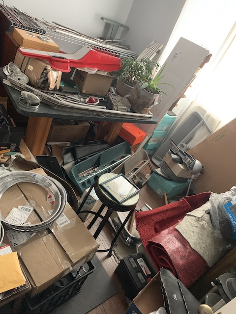

Interior
Similarly to how the sheet metal has minute differences between fifth generation years, the interiors have personalities as well. While some parts were a direct share beetween the 61-62 years.
For style and comfort I will be using 63-64 bucket seats. The 61-62 stock versions shared a bench seat for the front.
In the rear of the car the speaker grill is different between the years. This is a 62-64 year model. The 61 version is increadibly rare.
The antenna bears a tear drop shape for the '61. While the 62-64 had a sphere.

To the far left out of picture there is
One treasure room